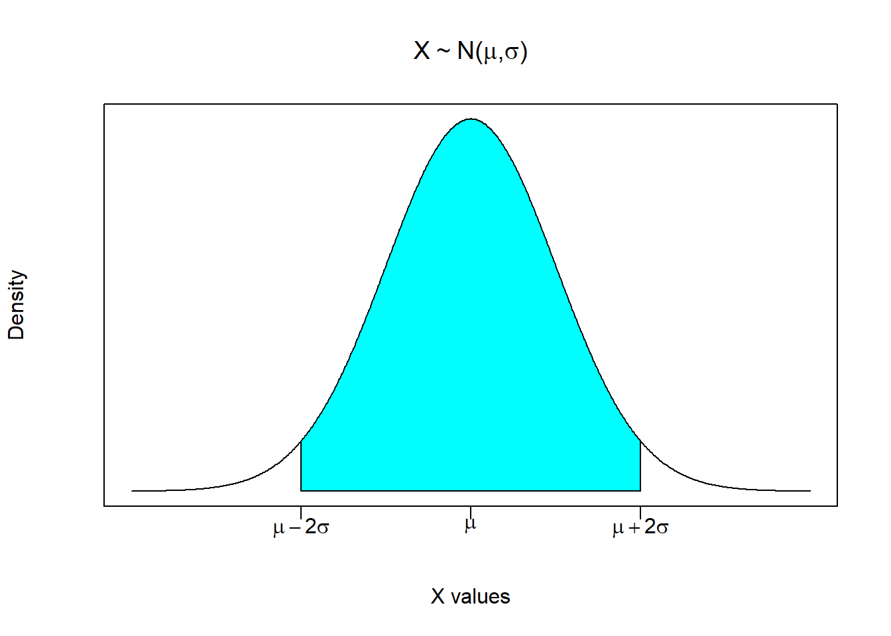
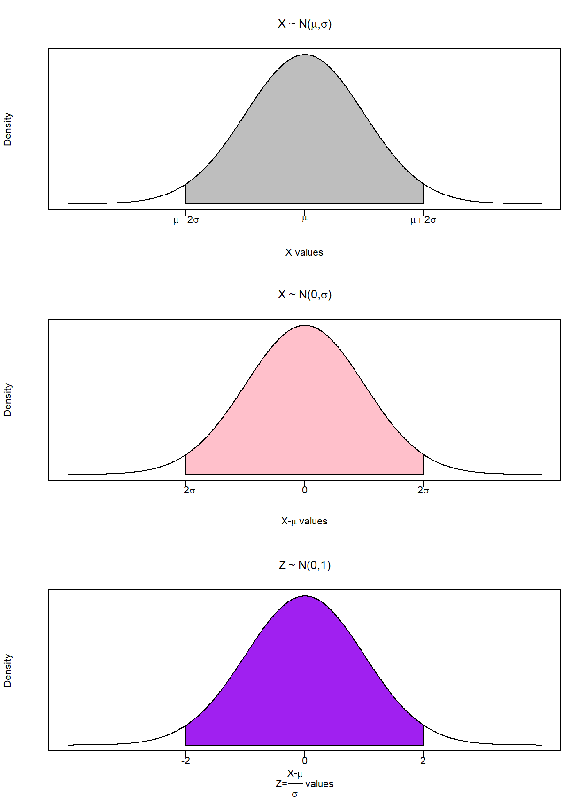
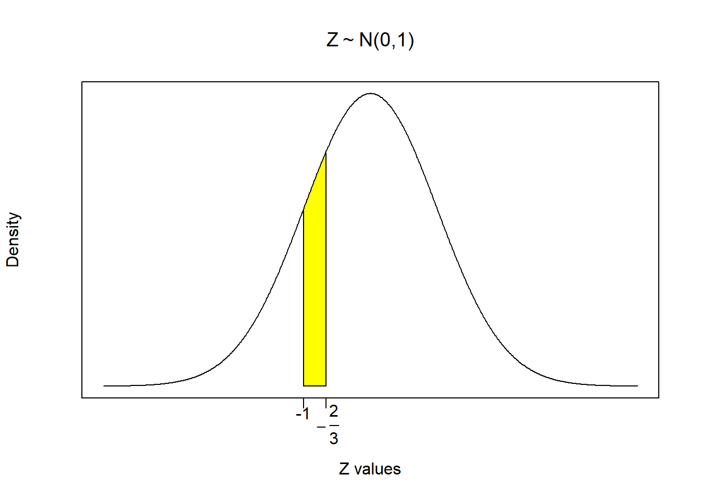
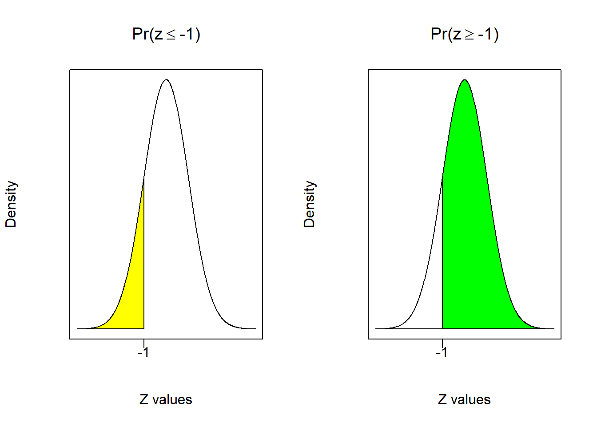
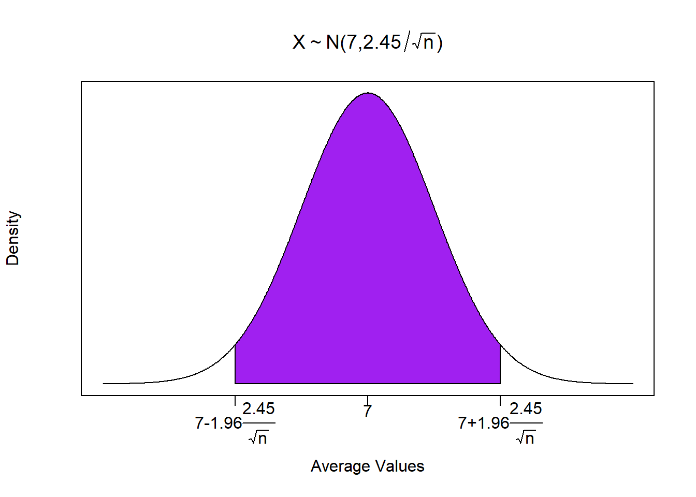

5.1 A Refresher on Probability
Suppose I give you a random variable \((X)\) and tell you that this random variable comprises a normal distribution with an arbitrary mean equal to \(\mu\) and an arbitrary standard deviation equal to \(\sigma\). We can denote this generally as \(X \sim N(\mu,\sigma)\) and we can draw this generally as

This picture is the normal probability density of this random variable. It is very much like a histogram, only we can consider a continuum of possible numbers (i.e., unlimited number of histogram bins). A normal probability density has several useful properties.
It is centered at the mean. It is a symmetric distribution with 50% of the probability being on either side of the mean.
Like all probability distributions, it must add up to 1 (or 100%). This is like saying that the probability of reaching into a hat full of numbers and pulling out a number between positive and negative infinity is equal to 100%.
A normal distribution has the nice property that approximately 95% of the density area is between two standard deviation above and below the mean. This is the shaded area in the above figure. It roughly states that if you reached into a bowl full of numbers that comprised this distribution, then you have a 95% chance of pulling out a number between \(\mu-2\sigma\) and \(\mu+2\sigma\).
This is very useful, but for our purposes we need to take this arbitrary normal distribution and transform it into a standard normal distribution. We do this by applying what is known as a Z-transformation:
\[Z=\frac{X-\mu}{\sigma}\]
The figure below illustrates how this transformation changes an otherwise arbitrary normal distribution. The top figure is the arbitrary random variable with a mean of \(\mu\) and a standard deviation of \(\sigma\) \((X \sim N(\mu,\sigma))\). The second figure shows what happens to the distribution when we subtract the mean from every number in the distribution. This effectively shifts the distribution such that it is now centered around zero, so we now have a normally distributed random variable with a mean of zero and a standard deviation of \(\sigma\) \((X-\mu \sim N(0,\sigma))\). The third figure shows what happens when we divide every number in the distribution by \(\sigma\). Recall that \(\sigma\) is a positive number that can be greater or less than one. If you divide a number by a number less than one then the number gets bigger. If you divide a number by a number greater than one then the number gets smaller. This means that dividing every number by \(\sigma\) will either increase or decrease the dispersion of values such that the standard deviation is equal to one. A normally distributed random variable with a mean of zero and a standard deviation is said to be a standard normal random variable \((Z \sim N(0,1))\).
Note that this transformation shifts the distribution, but does not change its properties. This was done on purpose to get you to see that a standard normal transformation shifts the mean and alters the dispersion, but does not change the facts that the distribution is still symmetric, still adds to one, and still has the property that 95% of the probability area is between 2 standard deviations to the right and left of the mean.

What does this transformation do? It takes a normally distributed random variable with arbitrary \(\mu\) and \(\sigma\), and transforms the distribution into one with mean 0 and standard deviation 1.
Why is this useful? It can easily be used for numerical probability calculations - but this isn’t as useful nowadays since we have computers. However, this transformation will be essential to put the normal distribution on the same level as other distributions we will soon encounter.
5.1.1 Application 1
Suppose there exists a bowl of numbered cards. The numbers on these cards comprises a normal distribution where the mean value is 5, and the standard deviation is 3. \[X \sim N(5,3)\]
We now have everything we need to calculate the probability of any outcome from this data-generating process. For example, suppose we wanted to determine the probability of reaching into this bowl and picking a number between 2 and 3. In probability terms:
\[Pr(2 \leq x \leq 3)\]
- First we perform a standard normal transformation \(Z=\frac{X-\mu}{\sigma}=\frac{X-5}{3}\), so our probability question gets transformed as well:
\[Pr(2 \leq x \leq 3)=Pr\left(\frac{2-5}{3} \leq \frac{x-5}{3} \leq \frac{3-5}{3}\right)\]
This delivers the same probability question, only in standard normal terms:
\[Pr(2 \leq x \leq 3)=Pr\left(-1 \leq z \leq -\frac{2}{3}\right)\]
- Next we illustrate exactly what this probability question looks like in our distribution. In other words, indicate what slice of the distribution answers the probability question. This slice is illustrated in the figure below by shading in the probability area of the distribution between -1 and \(-\frac{2}{3}\).

- Finally, we calculate the probability in R. Now this is where the illustration above will help get us organized, because we can exploit the distributional properties of symmetry and the distribution summing to one. This is important because we can use R to calculate the same number in several different ways. All of these routes to the answer are acceptable, so we will go through them all here.
First thing to do is introduce you to the R command “pnorm”
pnorm(q, mean = 0, sd = 1, lower.tail = TRUE)The command requires a number (quantity) for the variable q. It will then use a normal distribution with a mean of 0 and a standard error of 1 (by default) and calculate the area to the left of the number q. Note that this is the default action which is given by “lower.tail = TRUE”. If you want to turn off this default action, then you need to set “lower.tail = FALSE” and the command will calculate the area to the right of the number q. For example, we can calculate \(Pr(z\leq-1)\) or the area to the left of -1.
pnorm(-1)## [1] 0.1586553We could also calculate \(Pr(z\geq-1)\) or the area to the right of -1.
pnorm(-1,lower.tail = FALSE)## [1] 0.8413447These two probability areas sum to 1 (as they should), and are illustrated below. The left figure illustrates that 15.9% of the area under the distribution is to the left of -1, so you have a 15.9% chance of picking a number less than or equal to -1. Conversely, the right figure illustrates that 84.1% of the area under the distribution is to the right of -1, so you have a 84.1% chance of picking a number greater than or equal to -1.

Now that we know how R likes to calculate probabilities, we can use it to determine \(Pr(-1 \leq z \leq -\frac{2}{3})\) which is the shaded slice of the distribution in the previous figure.
- Using the default setting: suppose you want to calculate all of the probabilities using the default setting of calculating areas to the left. The shaded slice of the distribution is then the difference between the area to the left of \(-\frac{2}{3}\) and the area to the left of -1.
\[Pr\left(-1 \leq z \leq -\frac{2}{3}\right)=Pr\left(z \leq -\frac{2}{3}\right) - Pr\left(z \leq -1\right)\]
pnorm(-2/3)-pnorm(-1)## [1] 0.09383728- Removing the default setting. If you want to calculate probabilities from the right (which might come in handy), then the same slice of the distribution is the difference between the area to the right of \(-1\) and the area to the right of \(-\frac{2}{3}\).
\[Pr\left(-1 \leq z \leq -\frac{2}{3}\right)=Pr(z \geq -1) - Pr\left(z \geq -\frac{2}{3}\right)\]
pnorm(-1,lower.tail = FALSE)-pnorm(-2/3,lower.tail = FALSE)## [1] 0.09383728- Exploiting that the area sums to 1. Yet another way to arrive at the same answer is to calculate the area to the left of \(-1\), the area to the right of \(-\frac{2}{3}\), and arrive at the slice by subtracting these areas from 1.
\[Pr\left(-1 \leq z \leq -\frac{2}{3}\right)=1 - Pr(z \leq -1) - Pr\left(z \geq -\frac{2}{3}\right)\]
1-pnorm(-1)-pnorm(-2/3,lower.tail = FALSE)## [1] 0.09383728As you can see, each procedure delivers the same answer - you have a 9.4% chance of picking a number from a standard normal distribution between -1 and \(-\frac{2}{3}\).
Note that this is the same answer to the original question (before we transformed the distribution). The take away from this exercise is that there are plenty of straightforward ways of calculating probabilities in R, and we will be making a fair amount of use of them.
\[Pr\left(-1 \leq z \leq -\frac{2}{3}\right)=0.094\]
5.1.2 Application 2
Let us look deeper into our dice example. In particular, if I were to roll two fair dice a \(n\) number of times and calculated the average, what range of values should I expect to see?
Recall that the distribution of the population has a mean of 7 and a standard deviation of 2.45. This means that for \(n \geq 30\), the sampling distribution is normal and given by
\[\bar{X} \sim N \left( 7, \; \frac{2.45}{\sqrt{n}} \right)\]
Recall that in this (rare) example, we know the population parameters. Therefore, we can build a range where we expect sample averages to reside.
X <- seq(-4,4,0.01)
Y <- dnorm(X)
plot(X,Y,type="n",xlab="Average Values",ylab = "Density",
yaxt = "n", xaxt = "n", main = TeX('$X \\sim N(7,2.45 / \\sqrt{n})'))
xtick<-seq(-2, 2, by=2)
axis(side=1, at=xtick, labels = FALSE)
text(x=xtick, par("usr")[3],
labels = c(TeX('$7-1.96\\frac{2.45}{\\sqrt{n}}$'),7,
TeX('$7+1.96\\frac{2.45}{\\sqrt{n}}$')),
pos = 1, xpd = TRUE)
i <- X >= -2 & X <= 2
lines(X, Y)
polygon(c(-2,X[i],2), c(0,Y[i],0), col="purple")
So if we collected a sample on \(n=100\), meaning we rolled two dice 100 times, recorded the total each time, and calculated the mean value, then…
\[Pr\left( 7-1.96 \frac{2.45}{\sqrt{100}} \leq \bar{X} \leq 7-1.96 \frac{2.45}{\sqrt{100}} \right) = 0.95\]
Z = qnorm(0.975,lower.tail = FALSE)
n = 100
mu = 7
sigma = 2.45
(LFT = mu - Z * sigma / sqrt(n))## [1] 7.480191(RHT = mu + Z * sigma / sqrt(n))## [1] 6.519809\[Pr(6.52 \leq \bar{X} \leq 7.48) = 0.95\]
This means that with 95% confidence, the single outcome from your experiment will be within 6.52 and 7.48 if the die you are rolling are in fact fair.5
As stated earlier, this example is rare because we know the population parameters. When we don’t, we reverse engineer the probability statement so we can take what we know (the sample statistics) and use them to say something about what we don’t. This is known as a confidence interval.
Note that the code used a command called qnorm. This gets described further below.↩︎